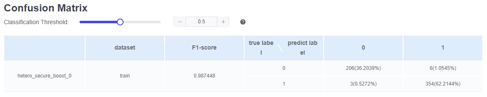
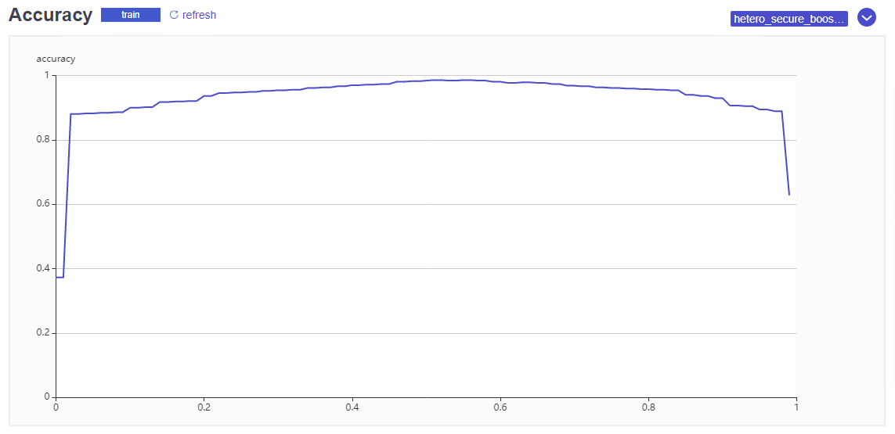
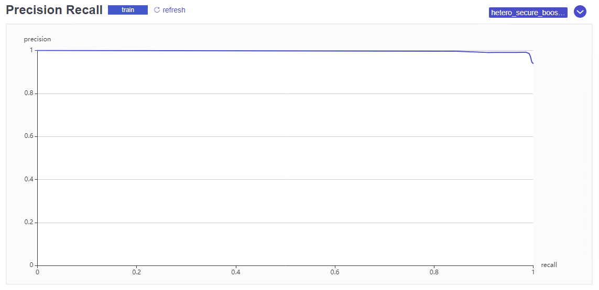
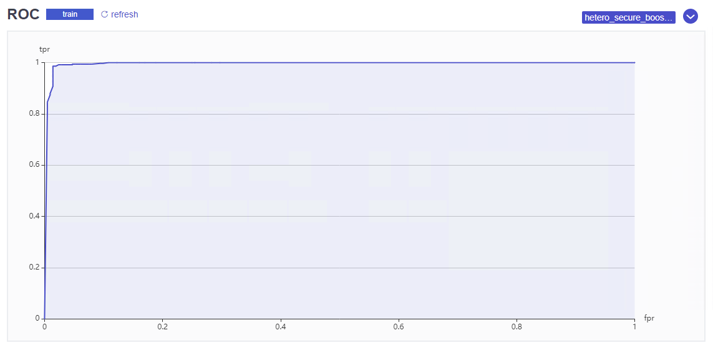
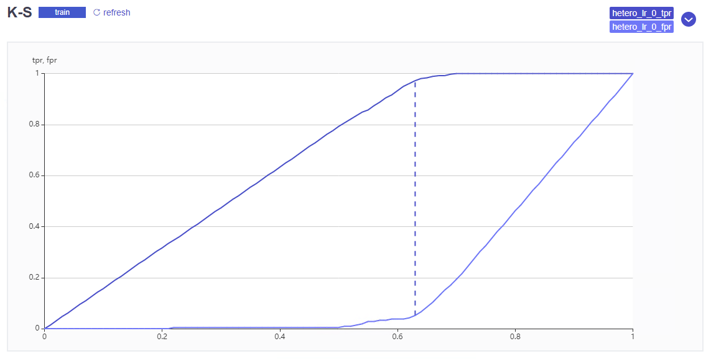
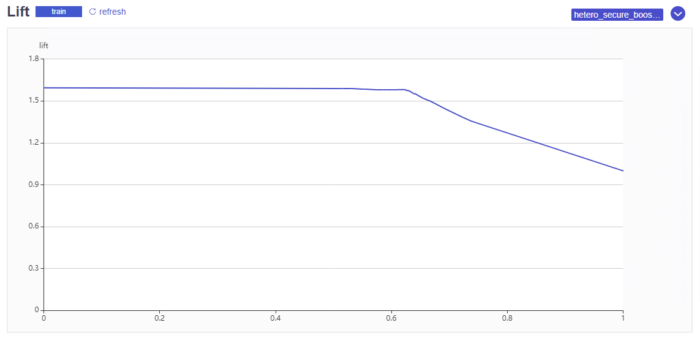
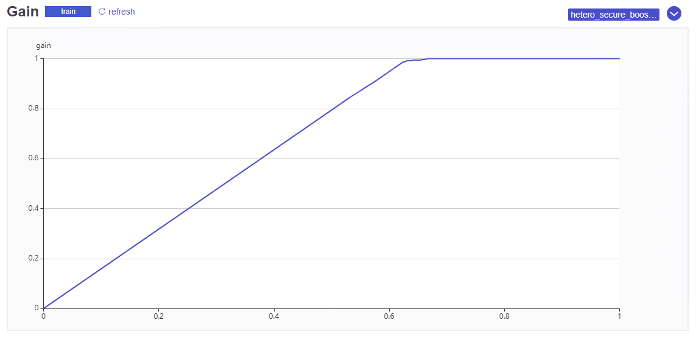
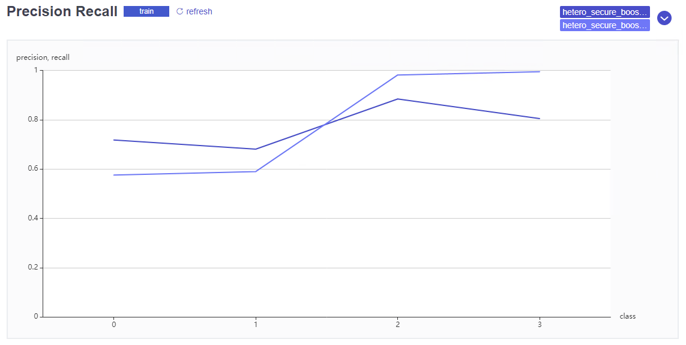
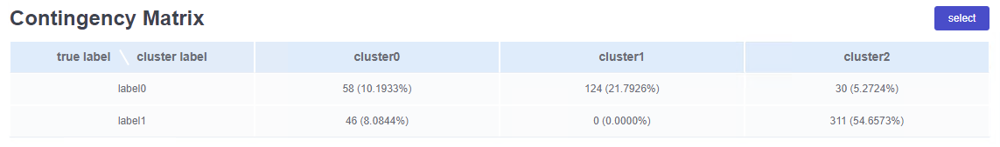

评估图表
本小节将对二分类、多分类、回归以及聚类模型的评估图表进行介绍
介绍每项图表时，包括两项内容
- 功能简介 简要介绍该图表的评估功能
- FATE样例 列举该图表在FATE中的表现形式
1. 二分类
二分类问题在实际中应用很广，评估图表有多项，下面具体介绍
(参考分类模型评价图表)
1.1 混淆矩阵
功能简介
FATE样例

注: FATE中将F1分数与混淆矩阵合并在一起显示
1.2 Accuracy曲线
功能简介
Accuracy曲线用于显示某个参数对模型预测准确率的影响，横轴为该参数，纵轴为准确率
由于准确率指标在样本分步不均衡时，不能真实的反映模型的预测效果，而实际场景中使用的通常都是样本分布不均衡的数据集，因此Accuracy曲线并不常用
FATE样例

注: FATE中的Accuracy曲线横轴为样本百分位，参考意义不大，不建议采用
1.3 P-R曲线
功能简介
P-R曲线描述的是在不同预测阈值下，模型精确率与召回率的变化情况，横轴为召回率，纵轴为精确率
模型的精确率与召回率之间并无直接关联，但二者通常是相互制约的，因此P-R曲线用于选择合适的阈值以同时兼顾模型的查全与查准效果
需要说明的是，P-R曲线的形状受样本分布情况的影响很大，因此使用不同数据集评估同一个模型所得到的P-R图差别可能很大
FATE样例

1.4 ROC曲线
功能简介
ROC曲线也称为受试者工作特征曲线，描述是模型分类效果与其预测阈值间的关系，曲线形状受样本分布的影响较小，因此能够更加客观的衡量模型的预测性能
ROC曲线的横轴是FPR，纵轴是TPR，分别对应不同预测阈值下的假正率与真正率。TPR与FPR均能反映模型的预测性能，但二者之间没有直接相关性。因此，ROC曲线不是函数曲线，而应看作是一系列不同预测阈值下模型的性能指标集合。
此外，ROC曲线与横轴围成的面积也是一个重要的评估指标，称为AUC。AUC越接近于1说明模型的分类能力越强，而AUC等于0.5时则说明模型等效于随机猜测
FATE样例

注: 图中曲线下紫色阴影区域的面积即为AUC
1.5 KS曲线
功能简介
KS曲线也称为洛伦兹曲线，描述的是模型的区分度与预测阈值之间的关系。
KS曲线图中包含两条曲线，横轴是样本百分位，纵轴分别是TPR与FPR，二者的差值即为KS
风控领域中，区分度代表着模型区分优质客户与违约客户的能力，是重要的评估指标。因此，KS曲线在风控领域中是确定模型预测阈值的重要依据
FATE样例

注: 图中紫色竖直虚线的长度代表模型的最大KS
1.6 Lift图
功能简介
Lift图也称为提升图，描述的是模型的预测效果相比于概率预测有多大程度的提升
在风控领域中，Lift图用来表示模型识别坏客户的效果是随机猜测的多少倍
FATE样例

1.7 Gain图
功能简介
Gain图也称为增益图，用于描述模型整体的精确度
Gain图的横轴为样本百分位，纵轴为增益度(gain)，也就是精准度
Gain图常用于营销场景下，纵轴的含义代表有回应人数的占比，用以衡量模型的推荐效果
FATE样例

2. 多分类
多分类问题可以看作是在多个类别上进行的二分类问题，因此对于每个类别的预测效果而言，均可以使用二分类模型的评估图表进行评估
但实际上多分类问题中往往更关注模型对多个类别整体的预测效果，而很少针对每个类别单独进行具体评估
在此介绍多分类问题中的混淆矩阵、Precision图与Recall图
混淆矩阵
功能简介
FATE样例
目前FATE中没有展示多分类任务的混淆矩阵
Precision图
功能简介
多分类的Precision图用于直观的展示和对比模型对于各个类别的预测精确度，横轴为类别名称，纵轴为精确度
FATE样例

注: FATE中以折线图的形式展示，可能是考虑到了交叉验证时要绘制多条曲线，但展示效果并不好，建议使用柱状图
TODO 柱状图样例
Recall图
功能简介
多分类的Recall图用于直观的展示和对比模型对于各个类别的查全效果，横轴为类别名称，纵轴为召回率
FATE样例
由于横轴相同，FATE将多分类的Precision与Recall绘制在一起，详见上方Precision图的样例
注: 与Precision图类似，也建议使用柱状图
3. 回归
目前FATE中仅使用评估指标对回归模型的评估，未使用相关图表，故暂时省略该部分内容
4. 聚类
4.1 列联矩阵
功能简介
列联矩阵(Contingency Matrix)也称列联表，用于判断各属性之间关联性的强度，因此可以用来评估无监督学习分类模型的分类效果
FATE样例

TODO What about there is no ground truth?